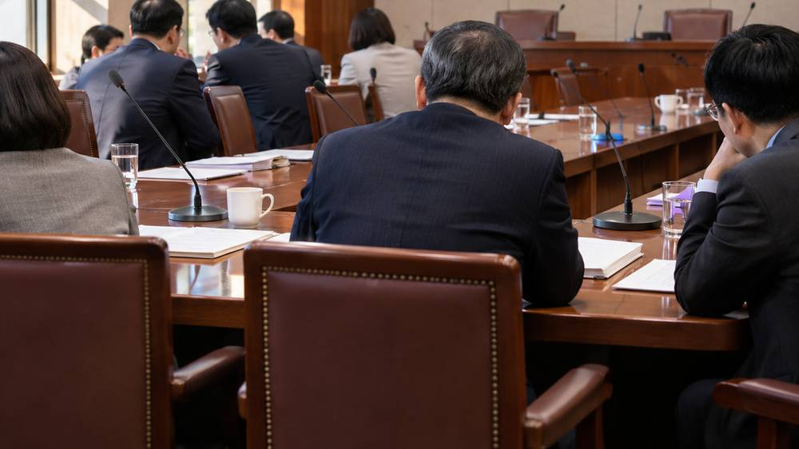

시민안전보험 15세 미만 사망보장, 상법 개정 국회 논의

국무총리비서실이 11월 19일 국회 간담회를 열었다. 힌남노 때 숨진 14세 중학생과 12·29 여객기 참사 15세 미만 희생자 8명이 보장에서 빠졌다.
지방정부가 주민을 위해 드는 시민안전보험에서 15세 미만 아이만 사망보장을 받지 못하는 문제를 두고 「상법」 개정 논의가 국회로 옮겨 갔다. 국무총리비서실은 11월 19일 국회의원회관 제8간담회의실에서 국회의원들과 함께 15세 미만 재난보험 사각지대 해소를 위한 간담회를 열었다.
현행 「상법」 제732조는 보험금을 노린 범죄에서 아이를 지키려고 15세 미만자의 사망을 보험사고로 하는 계약을 무효로 정한다. 이 조항은 지방정부가 자체 예산으로 보험사와 계약하는 공익 단체보험에도 그대로 적용돼 왔다. 2022년 9월 태풍 '힌남노' 때 포항 아파트 지하주차장 침수로 8명이 숨졌는데, 어머니를 구하려다 숨진 만 14세 중학생의 유가족만 사망보험금을 받지 못했다. 12·29 여객기 참사에서도 15세 미만 희생자 8명이 보장에서 빠져, 특별법에 국가가 특별지원금을 줄 수 있다는 조항을 따로 만들었다.
정부는 조항의 취지는 지키되 예외를 좁게 두는 쪽으로 의견을 모아 왔다. 9월 21일 법무부·금융위원회와 연 회의에서는 개인 생명보험과 달리 보험사고와 수익자 범위가 제한된 단체보험에만 예외를 두자는 방향이 나왔다. 10월 8일에는 생명보험협회·손해보험협회도 보험사고와 계약자·수익자 범위를 한정해 도덕적 위험을 줄이는 선에서 예외에 동의했다. 이번 간담회에는 법제사법위원회·정무위원회 위원과 학계·아동단체·보험협회 관계자가 나와 입법 대안을 논의했다.
같은 취지의 법안은 제21대 국회에서 임기 만료로 폐기됐다. 채이배 국무총리비서실장은 "이번 정기국회에서 상법 개정안이 통과될 수 있도록 관계부처 및 국회와 긴밀히 협의하며 끝까지 챙기겠다"고 말했다. 제22대 국회에서는 2024년 9월부터 2025년 7월까지 여야 의원 5명이 공익 단체보험에 예외를 두는 개정안을 냈다.
뉴스 바로 읽기
본지가 공개 자료와 본지 보도로 확인한 사실만 덧붙입니다
시민안전보험은 「재난 및 안전관리 기본법」 제4조에 따라 지방정부가 재난 피해 주민의 생활안정을 돕기 위해 자체 예산으로 보험사와 직접 계약하는 단체보험이다. 국무총리실 9월 자료에 실린 개정안 대표발의자는 박상혁(2024년 9월 5일)·박준태(2024년 12월 3일)·강득구(2025년 1월 14일)·김은혜(2025년 2월 6일)·황명선(2025년 7월 25일) 의원이다. 12·29 여객기 참사 특별법 제11조는 15세 미만 희생자 특별지원금을 지방정부 보험금 수준을 고려해 정하도록 했다. 개정안을 언제 심사할지는 아직 정해지지 않았다.
출처: 국무조정실(국무총리비서실) 2026-11-19 보도자료 「15세 미만 미성년자 재난보험 사각지대 해소를 위한 국회 간담회 개최」(시민사회비서관실, 붙임 hwpx) 원문 보기
출처: 국무조정실(국무총리비서실) 2026-10-08 보도자료 「15세 미만 단체보험 안전망 구축 방안 논의」 원문 보기
출처: 국무조정실(국무총리비서실) 2026-09-21 보도자료 「15세 미만 단체보험 보장 사각지대 해소 추진을 위한 관계부처 회의」 원문 보기